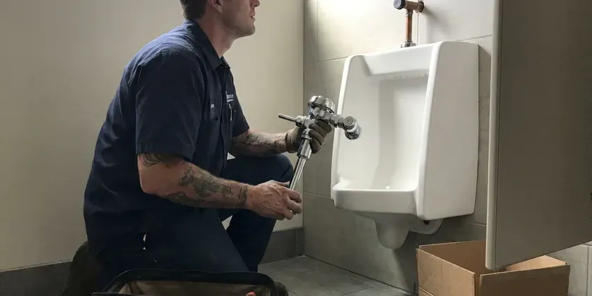

Toilet Installation in Normal, IL
From comfort-height to wall-hung and smart toilets, we handle toilet installation in Normal, IL with clean work and honest pricing.
- Fast Scheduling for Installs
- All Major Toilet Brands
- Fair Upfront Pricing
- Licensed & Insured
Need a New Toilet Installed in Normal, IL?
Get your new toilet installed correctly the first time by HVM Plumbing plumbers today.
Expert Toilet Installation Services in Normal, IL
HVM Plumbing brings the same care to a single powder room toilet as to a whole-house project. We help you choose the right bowl shape, height and flush rating for your space, then install it with stainless hardware that will not rust out. If you already bought a toilet, we are glad to install it for you.
Our expertise includes:
- Standard and ADA-compliant toilet installations
- Wall-hung carrier and in-wall tank system installation
- Rough-in and flange replacement for new installations

Additional Bathroom Plumbing Services in Normal, IL
From toilets to showers, our bathroom plumbing team in Normal, IL repairs, installs, and replaces every fixture with clean, code-compliant work.


Customers
Why Choose HVM Plumbing for Toilet Installation in Normal, IL?
Most toilet leaks we are called to fix come from a flange set too low or a toilet that was never leveled. We get those details right at installation so you do not deal with a soggy floor later.
- Durability, Our installations focus on long-term durability, using quality parts and tight connections to prevent future problems.
- Level Mounting, Shims and anchored bolts keep the bowl from rocking and losing its seal.
- Clean Work, We always protect your home during installation and leave the work area clean when finished.
Citywide Coverage
No matter if you're in North, South, East, or West Normal, our team is ready to respond quickly to your toilet installation needs. We're committed to offering convenient and accessible plumbing services throughout the entire Normal area.
Experienced Team
Each plumber at HVM Plumbing is well trained in all aspects of toilet installation, from removing old units to setting new bowls and tanks. They're equipped with the right tools and knowledge to handle any installation scenario effectively.
Safety-First Approach
Every installation meets plumbing code for clearances, typically 15 inches from centerline to side walls and 21 inches of open space in front. We install a new quarter-turn shutoff so the toilet can be isolated quickly.
Trusted Certified Normal Plumbing Services Professionals
At HVM Plumbing, we take pride in providing certified plumbing services throughout Normal, IL. Backed by recognized industry credentials, our experienced plumbers combine technical skill with genuine customer care. Whether it is repair, installation, or maintenance, we follow strict safety and quality standards to deliver lasting results you can trust.
Call Us Now PHCC Plumbing Contractor Recognition
PHCC Plumbing Contractor Recognition Better Business Bureau (BBB) Accreditation
Better Business Bureau (BBB) Accreditation Angi Certified Pro
Angi Certified Pro ISO 9001 Quality Management Certification
ISO 9001 Quality Management CertificationReliable Toilet Installation Services in Normal, IL
Bathroom Remodel Toilet Installation in Normal, IL
Remodels often raise the floor with new tile, which can leave the old flange too low. We use flange extenders or replace the flange so the seal compresses properly. If you are moving the toilet, we can relocate the drain, which on a slab foundation requires cutting and patching concrete. We coordinate timing so the toilet goes in after tile and grout have cured.

ADA-Compliant Toilet Installation in Normal
For accessibility needs, we offer expert installation of ADA-compliant toilets, which are typically taller and easier to use for people with mobility challenges. These installations often require specific rough-in measurements and careful placement. We make sure your new ADA toilet is firmly installed and meets all accessibility standards for comfort and safety in your Normal home.
Customer-Supplied Toilet Installation in Normal, IL
If you already bought a toilet from a home center, we can install it for a flat labor rate. Before we arrive, we recommend checking that the rough-in on the box matches your bathroom. We inspect the fixture for shipping cracks before setting it, since damaged porcelain should go back to the store. We supply the seal, bolts and supply line so you do not have to.
Smart Toilet and Bidet Installation in Normal
Smart toilets and bidet seats from TOTO Washlet, Kohler and Bio Bidet need a water connection and typically a nearby GFCI outlet. We install the T-valve or dedicated supply, mount the seat and test spray, heat and dryer functions. If an outlet is needed, we work with a licensed electrician. We also explain basic maintenance like cleaning the nozzle and filter.
Comfort Height Toilet Installation in Normal, IL
Comfort height toilets are a popular choice for their accessibility, offering a seat closer to chair height. Installing these requires precise measurement and secure anchoring. We make sure the toilet is stable and all plumbing connections are made without leaks. Our plumbers are adept at handling the slightly different dimensions and ensuring a comfortable, secure fit for your bathroom in Normal.
Brands We Install in Normal
Our team is experienced with installing all major toilet brands, including Kohler, Toto, American Standard, Delta, and Gerber. We understand the specific installation requirements for each manufacturer's models, ensuring proper function and warranty compliance. Whatever brand you've chosen for your Normal, IL home, you can trust us to install it with precision and care.
Urgent Toilet Replacement in Normal
If you have a severely cracked, leaking, or non-functional toilet that needs immediate replacement, HVM Plumbing offers urgent installation services. We can often provide same-day installation to restore full functionality to your bathroom quickly. Our team arrives with common replacement parts and can help you select a suitable replacement from our available stock in Normal.

Commercial Toilet Installation in Normal, IL
Beyond residential services, HVM Plumbing provides robust commercial toilet installation for businesses, offices, and public facilities in Normal, IL. We understand the need for durable, high-traffic solutions, including flushometer-style toilets and commercial-grade fixtures. Our installations focus on longevity and compliance with commercial building codes and ADA requirements.
Toilet Installation Near Me in Normal, IL
Many Normal homes, especially older ones, may have specific plumbing considerations that affect toilet installation. Our local expertise ensures we handle these details effectively, providing installations that last. We're committed to serving our community with the highest standards of plumbing craftsmanship.
If you're searching for 'toilet installation near me' in Normal, IL, HVM Plumbing is your local, trusted choice. Our plumbers are familiar with the specific plumbing requirements and common issues found in homes across the Normal area. We pride ourselves on quick response times and reliable service.
HVM Plumbing at a Glance
- Fully licensed plumbing team covering Normal, IL
- 24/7 emergency service with same-day scheduling
- Clear written estimates, no hidden fees
- 4.8-star rated by 528+ Illinois customers
Normal Map
Normal Information
- Population
- 52,618
- Area codes
- 309/815/217
- Service area
- Normal and communities within 40 miles
- Nearby
- Bloomington, Peoria, Decatur, Champaign
Proper toilet installation is crucial in Normal, IL homes, as a faulty seal or connection can lead to significant water damage that is costly to repair. Newer homes and remodels mostly use copper or PEX for supply lines, while older bungalows often mix several materials.
Expert Services
Trust our professionals for reliable HVM Plumbing solutions in Normal, IL.
Our Specialized Plumbing Services in Normal, IL
At HVM Plumbing, we provide a complete range of plumbing services across Normal, IL. From leak detection to full system installations, our team ensures fast, precise, and affordable service for both residential and commercial properties. Explore our core services below:


How Our Toilet Installation Process Works in Normal, IL
We keep toilet installation simple, predictable and clean from start to finish.
Request a Quote
Contact us at (773) 903-7643 to discuss your toilet installation needs and schedule an appointment. We'll provide a transparent estimate based on your specific requirements.
Old Toilet Removal
Our plumbers will carefully disconnect and remove your existing toilet, making sure there are no water spills or damage to your bathroom floor. We also responsibly dispose of the old unit.
New Toilet Setup
We meticulously install your new toilet, ensuring a tight wax ring seal, secure bolt tightening, and correct water supply line connection. We then test for leaks and proper flushing.
Frequently Asked Questions About Toilet Installation in Normal
The cost of toilet installation in Normal, IL usually ranges from $250 to $600 for labor, not including the toilet itself. This can vary based on the type of toilet, any necessary plumbing modifications, and the complexity of the installation. We provide upfront pricing after an on-site assessment.
For most adults, yes. The taller seat makes sitting and standing easier, especially for seniors or anyone with joint issues. Shorter users and young children may prefer a standard-height bowl.
HVM Plumbing stands behind our workmanship. We offer a warranty on all our toilet installations, covering labor and making sure your new toilet works as expected. Specific warranty details will be provided at the time of service.
Common signs you might need a new toilet include frequent clogs, cracks in the porcelain bowl or tank, constant running water, a wobbly base, or a toilet that is very old and inefficient. Upgrading can save water and improve the look of your bathroom.
Common signs that you might need a new toilet include frequent clogs, constant running, visible cracks in the bowl or tank, excessive wobbling, or a toilet that is very old and inefficient. If you're always repairing it, replacement is often more cost-effective.
A comfort height toilet has a bowl that is taller than standard models, usually around 17 to 19 inches from the floor to the top of the seat. This height is closer to a standard chair, making it more comfortable for many adults, especially those with mobility issues.
HVM Plumbing stands behind our workmanship. We offer a warranty on all our toilet installations, covering labor and making sure your new toilet works correctly. Specific warranty details will be provided with your service agreement.
Private wells serve many rural homes, and iron, sulfur odors, and grit are frequent reasons homeowners call for treatment or repairs. Hard water can lead to mineral buildup in toilet tanks and bowls over time, affecting performance and requiring more regular cleaning. While it doesn't directly impact installation, choosing a toilet with a good glaze and strong flush can help limit these effects.
What People Are Saying About Our Plumbing Experts?

Robert G.
The trenchless sewer replacement saved our front yard. They walked us through the camera inspection footage first so we knew exactly what we were paying for.
Sewer Line Replacement · Normal, IL
Laura S.
I scheduled a water heater replacement, and the team made the process smooth and affordable. The new unit works perfectly, and they cleaned up after completing the job.
Water Heater Replacement · Bloomington, IL
Mark T.
When our office needed drain cleaning, HVM Plumbing provided quick, reliable service. The plumber arrived on time and made sure every drain flowed perfectly before leaving. Very satisfied.
Drain Cleaning · Bloomington, IL
Daniel K.
A pipe burst at 11 pm and they actually answered. The plumber showed up within the hour, shut everything down, and had us back to normal the next morning. Could not ask for more.
Emergency Plumbing · Springfield, IL
Patricia H.
We had a slab leak that two other companies could not find. HVM Plumbing located it in under an hour, explained our options, and the price matched the quote to the dollar.
Slab Leak Repair · Normal, ILSofia M.
Two new toilets installed in one visit, no mess left behind, and the tech even adjusted a faucet he noticed was dripping. Fair pricing and really friendly.
Toilet Installation · Peoria, IL